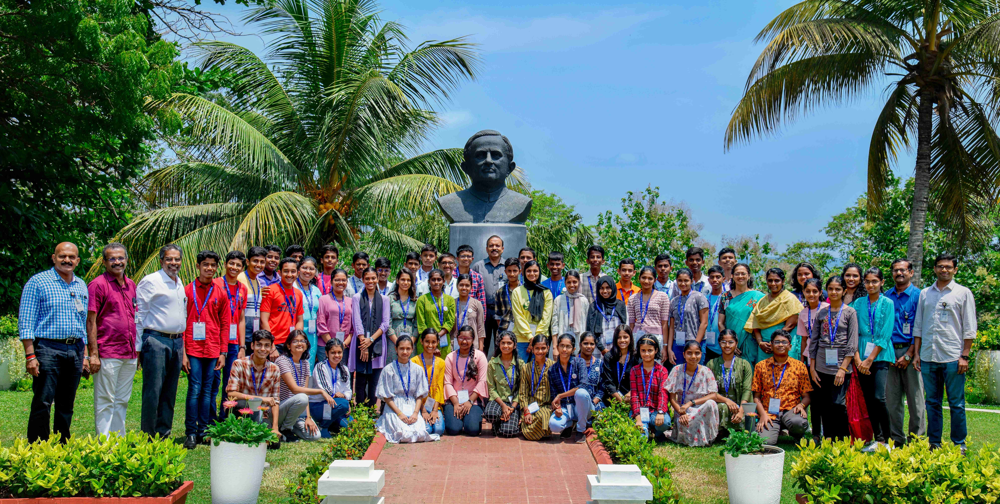
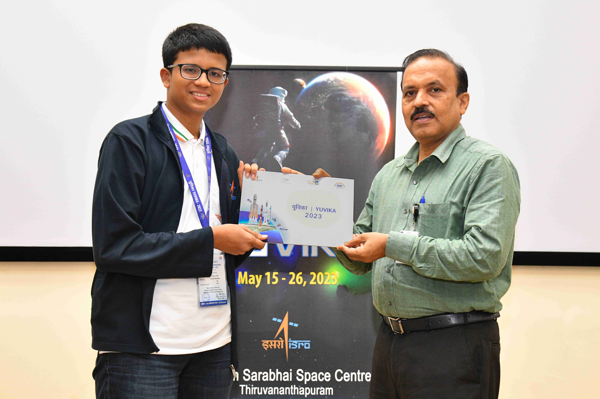

Life is a journey, and sometimes, a single step can transform our lives in unimaginable ways. As I
reflect on my own journey, there is one experience that shines brightly - ISRO Yuvika 2023. For two
unforgettable weeks, I was fortunate to be a part of this residential program held in the captivating
city of Trivandrum, Kerala.
Journey Begins:
In April, I applied to this program through the ISRO website. On the 10th of April, during our extra
classes, I received an email from ISRO Headquarters about my selection. Overwhelmed with joy and
excitement, I couldn't believe my luck! The Vikram Sarabhai Space Centre (VSSC) in Trivandrum, Kerala,
was the designated centre for our camp.
The Yuvika Experience:
From May 14th to May 26th, Yuvika 2023 immersed us in the captivating world of space science and
technology. We attended 30 lectures delivered by ISRO scientists from various research areas. Topics
ranged from an introduction to Aerospace technology to captivating missions like Gaganyaan, Mangalyaan,
and Chandrayaan. The scientists generously answered our questions, enlightening us further.
We had the incredible opportunity to visit various VSSC facilities. Witnessing thrusters in
action within a vacuum, observing Vikram Engines, PSLV, and GSLV up close, and seeing actual satellite
fuel tanks and components of upcoming missions left an everlasting impression. The visit to ISRO's Space
Museum showcased their successful experiments and historical mission models. We even witnessed the
launch of an RH-200 Sounding Rocket and a balloon launch used for measuring atmospheric parameters.
The Challenges and Growth:
Among the engaging activities, the water rocket-making challenge stood out as exhilarating and
demanding. We brainstormed ideas and built our own water rockets, applying Newton's Third Law. Our
rocket soared to an impressive height of 7.24 meters, becoming a memorable achievement among our fellow
participants. Another stimulating challenge was the ADBlitz, where we creatively presented
advertisements based on given topics. Despite time constraints, our teamwork and quick thinking helped
us showcase our product successfully.
We also participated in workshops on robotics, where we assembled Arduino-based rovers using
provided manuals and pre-programmed MCUs. Furthermore, we had quizzes, essay writing competitions, and
puzzle-solving sessions based on the lectures and facility visits, fostering our knowledge and critical
thinking skills.
Cultural Immersion:
No camp is complete without moments of enjoyment. We engaged in various group games and activities that
brought immense delight. The Talent Show program highlighted the diverse talents of each student,
including group and solo performances of songs, dances, and magic tricks. We proudly showcased Goan
cultural songs, celebrating unity amidst diverse state cultures. Yoga sessions in the morning and sports
and fitness activities in the evening added a healthy and invigorating aspect to our daily routine.
Friendships for a Lifetime and Unforgettable Moments:
We were paired with roommates from different states, forming bonds that will last a lifetime. My
roommate, Arjun, a kind-hearted boy from Kerala, became a close friend. I made numerous friends from all
across the country. The friendship and shared experiences created an atmosphere of unity and support.
Whether watching IPL or the Champions League together or studying late into the night before the test,
every moment was filled with joy and a sense of belonging. Bus rides filled with singing, dancing, and
energizing conversations with scientists and residential officials hold a special place in my heart.
Reflections and Takeaways:
Yuvika 2023, this two-week residential program, not only provided knowledge and exposure to space
science and technology but also boosted confidence and taught valuable lessons in teamwork, leadership,
and overcoming challenges. It was never about winning or losing the activities; it was about the
opportunity to learn, grow, and interact with ISRO scientists and participants from across India. Yuvika
resolved my doubts and opened new horizons. I only wish the camp could have been extended for a few more
weeks, as the experience was simply unforgettable.
Conclusion:
Yuvika 2023 was not just a program but a transformative journey that left an indelible mark on my life.
It felt like my usual school routine but in a residential setting. Through the ups and downs, the
challenges and triumphs, I emerged with a renewed sense of purpose, a broader worldview, and cherished
memories that will last a lifetime. If you're seeking an opportunity to embark on a journey of
self-discovery and growth, I wholeheartedly recommend considering Yuvika. Visit: ISRO Yuvika for more information and make sure to
apply for the upcoming editions. Embrace the unknown, and you'll be amazed at the incredible experiences
that await you!
-Aniket Sushant Bhatikar, X D

Date: 10 June 2023